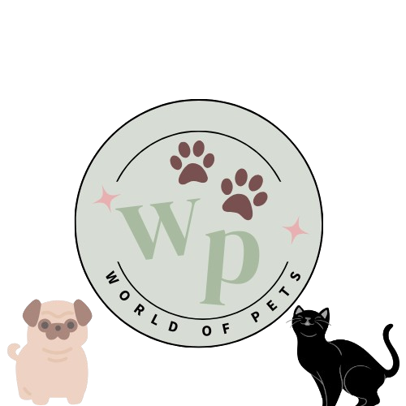

Bem-vindo ao nosso site!

Já pensou em transformar a vida de um animal com um simples gesto?
O World of Pets nasceu como um projeto escolar, mas virou um projeto de amor.
No nosso site, você encontra pets incríveis esperando por um novo lar
— e também várias formas de ajudar:
❤️ Seja voluntário
💸 Doe e apoie nosso trabalho
🏡 Adote com responsabilidade
👉 Cadastre-se e faça parte dessa causa!
Juntos, podemos mudar muitas histórias.
#WorldOfPets #AdoçãoResponsável #AjudeUmAnimal #DoeAmor #Voluntariado #ProjetoSocial